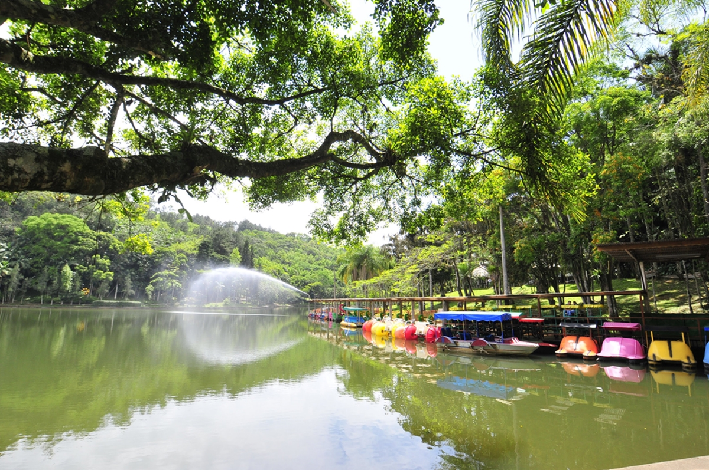
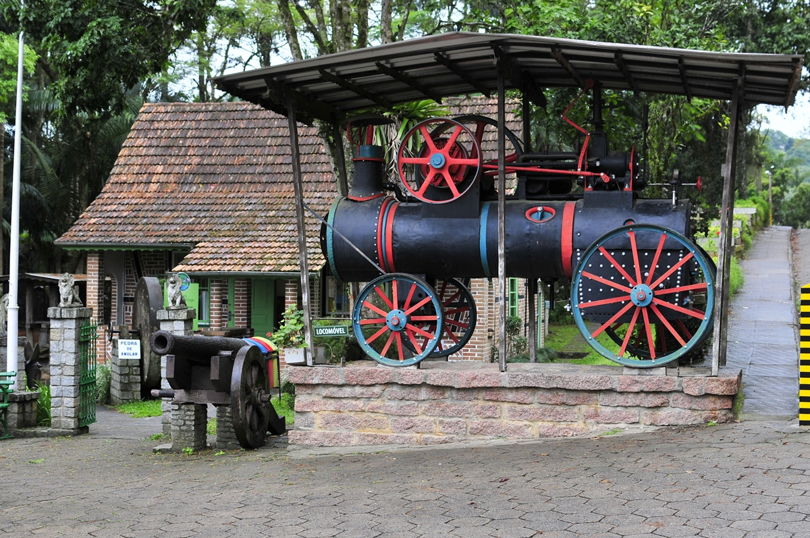
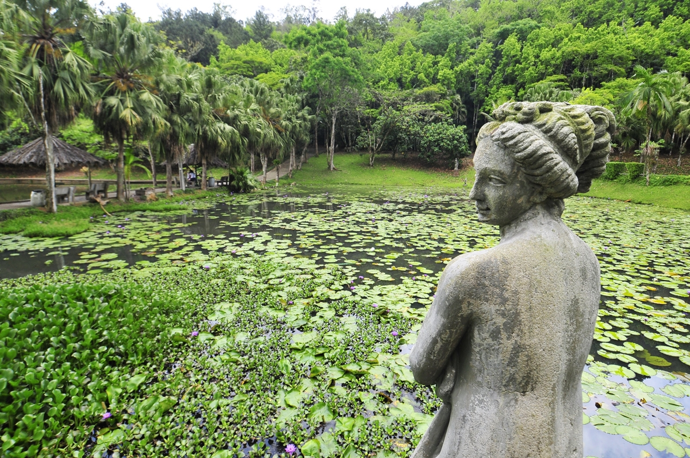
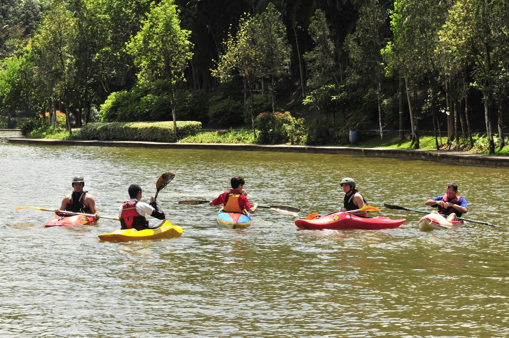
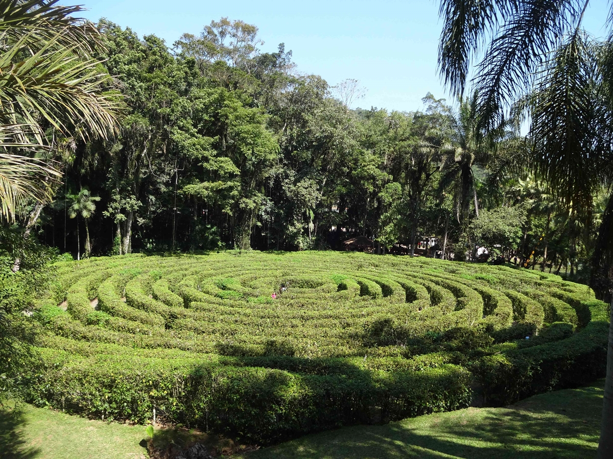
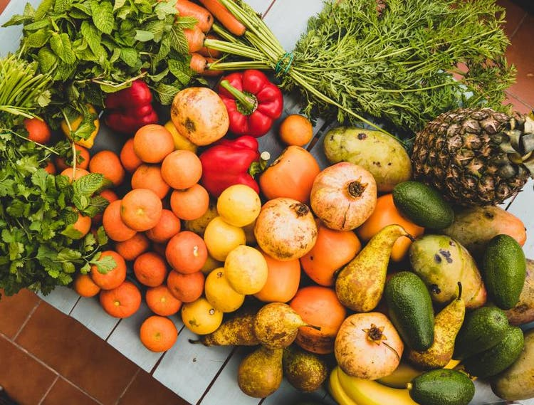

Parque Malwee listamos mais de 50 curiosidades sobre um dos maiores pontos turísticos de Jaraguá do Sul
Fonte: OCP News
Você já visitou ou tem vontade de conhecer o Parque Malwee? O lugar é um dos pontos turísticos mais
procurados em Jaraguá do Sul e região.
O parque é um reduto natural com paisagens de tirar o fôlego que encantam os visitantes logo na entrada.
São lagoas, pistas para caminhadas e corridas, áreas verdes, espaços para descanso e piqueniques, choupanas
para churrascos, restaurantes, quadras esportivas e muito mais!
Desde a sua fundação, o Parque Malwee desperta a admiração e também a curiosidade de muita gente.
Por isso, separamos aqui algumas (muitas) informações bem legais sobre a história e funcionamento deste
lugar incrível. Confira!
As curiosidades surpreendentes sobre o Parque Malwee
1.O Parque Malwee foi fundado no dia 27 de setembro de 1978.
2.A data de fundação aconteceu no mesmo dia do aniversário de 61
anos do seu fundador, Wolfgang Weege.
3.O parque tem uma área total de 1,5 milhão de metros quadrados.
4.Originalmente, o Parque Malwee era um grande campo de plantação de arroz,
com pouquíssima vegetação nativa.
5.A inspiração para a criação do parque veio das viagens de Wolfgang Weege para a Europa.
Encantado com as paisagens deslumbrantes dos parques de lá, decidiu fazer um tributo à natureza em Jaraguá do Sul.

6.Para arborizar os campos, o fundador selecionou plantas típicas da região
e trouxe espécies de árvores de diversos lugares do mundo.
7.Atualmente, existem mais de 35 mil árvores, entre elas, espécies nativas da Mata Atlântica
e espécies exóticas trazidas de outras partes do planeta.
8.O parque conta com mais de 100 espécies de aves.
9.Ao total, o Parque Malwee possui 16 lagoas.
10.Na festa de inauguração, Wolfgang encenou a chegada dos seus antepassados ao Brasil.
Trajados com roupas da época, a família Weege cruzou uma das lagoas do parque a bordo de um barco que representava o veleiro Lord Brougham que trouxe
a família para o Brasil, em 1868.
11.O processo de criação do Parque Malwee durou cinco anos, desde o mapeamento e aquisição dos terrenos no bairro Barra do Rio Cerro, até sua inauguração, em 1978.
12.O Parque Malwee contém referências dos países pelos quais
seu fundador passou. Do Japão, por exemplo, foram trazidas sementes da espécie de Pinus Japonês.
13.No parque há também árvores e palmeiras originárias da Polinésia, limoeiros raros,
coco-anão, nozeira pecan, flamboyant, cerejeira, araucárias e uma grande plantação de palmeiras.
14.Durante uma viagem à China, Wolfgang Weege ficou abalado com o regime ditatorial do governo da época e encomendou ao renomado escultor pomerano, Erwin Curt Teichmann, uma cópia da Estátua da Liberdade, para
lembrar que o bem mais precioso de um homem é a sua liberdade. A obra encontra-se na maior das 16 lagoas do parque.
15.Teichmann também esculpiu a estátua da Costureira em homenagem à profissão que tanto era admirada por Wolfgang Weege.
A obra ficou pronta em 1981 e foi exposta na festa de 75 anos de instalação da Firma Weege que deu origem ao Grupo Malwee.
16.No parque, é possível encontrar mais de 30 réplicas de estátuas internacionais e mitológicas.
17. A Avenida dos Bambus, dentro do parque, foi
inspirada no Túnel de Bambus existente na via de acesso ao aeroporto da cidade de Salvador, considerado um patrimônio natural da capital baiana.

18.Dentro do parque, também existe um projeto paisagístico em formato de labirinto, idealizado para aguçar o
senso de direção das crianças. No local, os baixinhos se divertem e podem “se perder” à vontade.
19. As delicadas flores aquáticas encontradas nas lagoas do parque são denominadas Ninféias e são símbolo do Parque Malwee.
20. Em 1982 foi dado início à construção da maior lagoa do parque.
21.A florada das Ninféias acontece na primavera e no verão quando as folhas dão lugar às lindas flores azuladas.
22.O muro do Parque Malwee é considerado o maior mosaico em painel da América Latina.
23.A obra do muro foi inspirada na história dos 100 anos da Firma Weege e é criação do artista
plástico Paulico, de Jaraguá do Sul. Ao todo, são 1 milhão e 850 mil peças, 14 painéis e 600 metros de extensão.
24.A maior lagoa do lugar é habitat de carpas, tilápias, pacus e traíras, e paraíso dos amantes da pesca.
25.Durante a temporada de pesca, só é permitido o uso de anzol para a captura dos peixes.
26.Na lagoa central, já foi pescada uma carpa de aproximadamente 25kg durante a temporada de pesca do Parque Malwee.
27. O Parque Malwee já foi palco de milhares de eventos esportivos como triatlhon e corridas.
28.Com 100 mil metros quadrados, a lagoa maior já foi usada para competições de natação, canoagem e regatas.
29.Próximo a uma das lagoas do parque, foi construída uma ponte com cobertura de palha e pregos de madeira que relembra as primeiras construções da cidade.

30.A pista de bicicross de 340 metros de extensão construída dentro do parque
segue padrões internacionais e sedia diversos campeonatos nacionais e internacionais da modalidade.
31.Em 1982, o Parque foi doado aos funcionários da Malwee, dando origem à Associação Recreativa Armalwee.
32.O Parque já foi cenário de inúmeras campanhas publicitárias da Malwee, principal marca de moda do Grupo Malwee.
33.Em março de 2018, o Parque foi palco do 1º Luau do Planeta, com mais de 2.500 participantes.
34. O Parque Malwee abriga o Museu Wolfgang Weege.
35.Inaugurado em 16 de maio de 1988, o museu conta com três espaços de exposição permanente e reúne cerca de 1.700 peças no acervo.
36.A maioria das peças em exposição no museu foi doada pela comunidade e representam a
vida doméstica, de trabalho, estudo e lazer dos primeiros imigrantes da região.
37.As construções que hoje são sede do museu eram antigas residências e representam dois momentos arquitetônicos distintos: uma casa no
estilo enxaimel construída em 1938 e uma casa no estilo colonial construída em 1945.
38.Wolfgang Weege faleceu em 16 de maio de 1987 e suas cinzas foram depositadas em um Pantheon dentro do parque, sinalizado com o busto do empresário.
39.Pelas belezas naturais, o parque já foi cenário para diversas gravações de programas televisivos da Rede Record, TV Globo, entre outros.

40.O Parque Malwee foi premiado inúmeras vezes como case de sustentabilidade.
41.A reserva é considerada o principal ponto turístico de Jaraguá do Sul e um dos principais cartões postais de Santa Catarina.
42.Referência nacional em preservação ambiental, o Parque Malwee é mantido exclusivamente pelo Grupo Malwee e pela família Weege.
43.O parque recebe mais de 150 mil pessoas anualmente.
44.A utilização do espaço é gratuita.
45.O parque abre todos os dias, inclusive feriados, das 7h às 17h.
46.Recentemente, o Parque Malwee recebeu
a visita do apresentador Zeca Camargo. Zeca ficou encantado com o local e publicou um vídeo em suas redes sociais.
47. Eventos podem ser realizados no Parque. Para solicitar autorização, é possível entrar em contato com
os responsáveis pelo e-mail: armalwee@malwee.com.br ou ligar para o telefone (47) 3376-0214.
48.Em toda a extensão do Parque existem lixeiras para o descarte correto do lixo.
49.No Parque Malwee, existem dois restaurantes.

50.O primeiro restaurante serve uma variedade de pratos saborosos com destaque para a
comida típica germânica, com opções como o marreco com repolho roxo.
51.O segundo restaurante oferece pratos variados com frutos do mar e carnes.
52.No ginásio de esportes Armalwee, já foram realizadas edições dos Jogos Abertos de Santa Catarina.
53.Os visitantes também podem desfrutar do novo circuito para a prática de mountain bike e
cicloturismo, apreciando as belezas do parque, em um local com baixa circulação de veículos.
Veja Mais+
10 alimentos para reforçar o sistema imunológico

Nutricionista de Santa Catarina indica lista de itens que podem potencializar as defesas naturais do corpo.
Vídeo: Menino distribui mangas após boa colheita em SC: ‘peguem à vontade’
Gustavo de Honorato Pelissari, de 12 anos, é morador de São Miguel do Oeste e deu exemplo de solidariedade
chamando a atenção dos moradores do município.